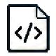

01 / THE FRONT DOOR
Instructional Design Portfolio
A home for case studies and interactive examples that shows how I think through learning problems, not just what the final screen looked like.
✳ This siteView code ↗
HALEY'S GITHUB BUILD LAB
A portfolio became a little ecosystem of learning tools. I designed the experiences, built the interfaces, wrote the code, and kept following the interesting problems.

CODETHE SIDE QUESTS HAVE SIDE QUESTS
Here’s how the pieces talk to each other. The public sites are the front door; the actual tinkering happens backstage.
Two routes: go straight to a manager, or prep the project in the Workbench first. Either way, finalized changes pass through the matching manager before reaching a public site.
01 / THE PROJECTS
Each started with a real learning design problem. The code came in when a good idea deserved a better way to work.
A home for case studies and interactive examples that shows how I think through learning problems, not just what the final screen looked like.
The good bits deserved their own place: a public library for reusable learning templates, interactions, prompts, code, and experiments.
A growing space to sanitize projects and turn source material into editable learning experiences, project files, and templates. Branching scenarios are the fun, messy middle.
Public experiences and local maintenance tools have different jobs. The separation is part of the design.
WHY GITHUB?
It’s more fun when the showcase has a workshop behind it.
More room for personality, custom interactions, and the odd wizard cameo.
Content, code, reviews, and publishing can live in one connected workflow.
GitHub Pages lets the public sites run for free.
THE SECURITY PART, BRIEFLY
Portfolio Manager, Library Manager, and the Learning Workbench are password-protected local tools. AI work is opt-in and reviewable on tools that it is enabled. Content updated for every system are reviewed and validated before publishing, and public builds contain approved files only. The mini demos here use fictional examples and connect to no private tool.
02 / INSIDE THE REPOS
The private tools get self-contained mini demos with fictional examples. The Content Library is public; its page can open separately.
AI here: proposes page edits, project plans, and QA findings for human review.
Learning experiences from scope and design through delivery, LMS operations, and analytics.
Explore my work →


What you're seeing: The curated home for my case studies and learning experiences.
This site ✳Automation here: local file-based suggestions, previews, checks, and deliberate publishing.
What you're seeing: Reusable learning work with a separate local tool for upkeep.
What this demo does: shows a fictional branching scenario entirely in this page. It never connects to the private tool, runs AI, or uploads files.
Safe sample only03 / HOW I BUILD
I treat each idea like a learning experience: find the friction, sketch the path, build the useful part, then check whether it actually helps.
Where is the learner, editor, or builder getting stuck? That becomes the brief.
Map the content, interactions, and interface before adding more buttons.
Turn the design into working pages, tools, structured data, and reusable parts.
Preview, review, validate, ship, and leave a clearer path for next time.
Favorite plot twist: the “supporting tool” often becomes a project of its own. Portfolio Manager and Library Manager both started because the upkeep deserved a better experience.
04 / WHAT IT SHOWS
Instructional design, visual design, and code work together here. That's how I turn a learning idea into something people can actually use.
One curious builder.
Several very useful hats.
Learning flows, practice, feedback, and the question behind every screen: “What does someone need to do next?”
Clear navigation, helpful interfaces, visual rhythm, and a little personality that makes complex work approachable.
Working prototypes, local tools, reusable patterns, and checks that help good ideas survive the next edit.
STILL BUILDING, BY THE WAY ✳
Open the repos, play with the public demos, or say hi. I'm always up for a conversation about learning, design, and the fun stuff in between.